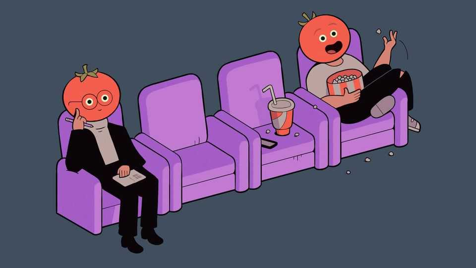
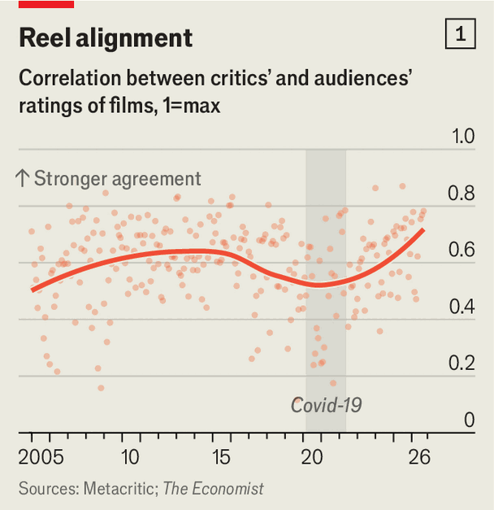
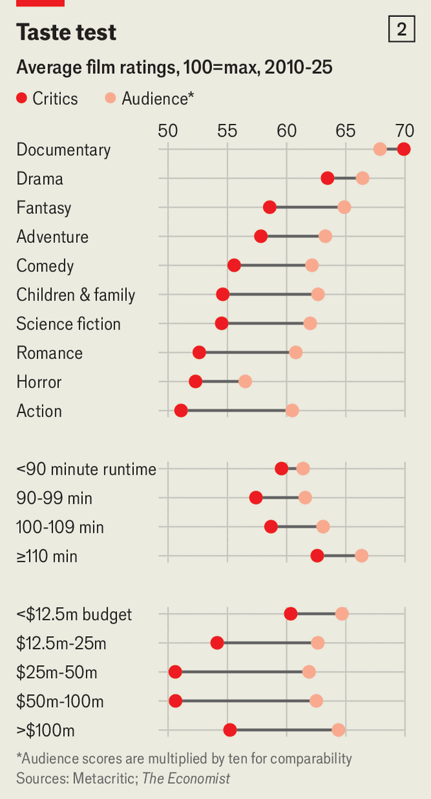

Are film critics as snooty and out of touch as people think?
We look at the data to find out

Oct 22nd 2026
Whether a film is good enough to warrant a trek to the cinema is not always easy to ascertain. Recently viewers have praised “Digger”, a satirical black comedy about a wealthy oil tycoon whose company triggers an environmental catastrophe. It has a 76% audience-approval score on Rotten Tomatoes, a review aggregator. But critics did not dig the film: only 53% reviewed it positively, complaining it was ponderous and preachy. Fans calling themselves “Digger Nation” have mobilised online to defend the movie.
Signals about films’ quality can be confusing to decipher. In April fans judged a biopic of Michael Jackson to be a thriller, with 97% of them enjoying it. But most critics thought “Michael” was bad. In January “Melania”, a documentary about America’s First Lady, reflected the politically polarised times, with a 90-point gap. “An absolute masterpiece!” gushed one audience member. “Gilded trash”, said the Guardian.
Critics and audiences have often failed to see eye to eye. The history of film criticism is littered with judgments that aged badly. (Pity the reviewer who dismissed “Citizen Kane”, now considered one of the greatest films ever made, as “well-intentioned, muddled, amateurish”.) Today many think that critics seem out of step—perhaps more than ever before.
But are they really? To test whether critical and popular opinion are drifting apart, The Economist compiled two decades of reviews of more than 10,000 films from Metacritic, an aggregator site. (We did not use Rotten Tomatoes because the website changed its audience-score methodology in 2019.) Then we matched the reviews with box-office data from The Numbers, a film-industry database.

Talk of a critic-audience divide, it turns out, is overblown. For most of the past 20 years, reviewers and moviegoers have been in broad agreement. Around a decade ago, their views began to diverge. But by 2025 critic and audience ratings were more aligned than at any point since 2005 (see chart 1).
The real difference is not how critics and audiences rate films, but which films they rate. For every ten audience reviews of a documentary, there are six from critics. For dramas and comedies there are around three, and for action less than one. Foreign-language and low-budget films attract disproportionately more attention from critics than from audiences.
Critics and audiences may gravitate towards different films, yet their judgments often align. Between 2005 and 2016 the correlation between critic and audience scores—where zero implies no relationship and one means the scores move perfectly in step—averaged around 0.6. Then opinions began to diverge. Before 2017 a ten-point increase in a film’s audience score was associated with a ten-point increase in its critic score. Over the next six years, that figure fell to just eight points. The correlation between critic and audience scores also dropped from 0.6 to around 0.5. In short, critics’ enthusiasm for a film told you less about how much viewers liked it.
To understand why, we tested a few hypotheses. The first was that the mix of films had changed, as film critics and audiences tend to agree more on some genres than others. But changes in genre, budget, sequel status and studio did little to explain the degree of disagreement.
In fact, much of the divergence happened within two of Hollywood’s biggest categories: big-budget action and family films. Before 2017 critics’ opinions of these films tracked audience opinions about as closely as they did for any other genre. Between 2017 and 2022, however, that relationship collapsed: critics’ scores on such releases were a poor guide to how audiences would rate them. All told, we estimate that roughly 43% of the divergence between critics and audiences was concentrated in these two types of film.
Most industry experts attribute the deviation to franchise fatigue. “Film reviewers got tired of superhero movies before the general audience did,” says Bruce Nash of The Numbers. “It gets boring”, says Mattias Frey of City St George’s, University of London, “if you’re seeing ‘Fast and Furious 23’ or ‘Avengers Part 27’.”
Political polarisation may have also played a part. When studios cast more female and minority actors in big-budget franchises, or embrace “woke” themes—as Marvel Studios did with “Captain Marvel”, its first female-led film, which was described as a “big feminist movie”—audiences tend to be more critical.

Since 2022 critics and audiences have found more common ground. Across all major genres, the correlation between their ratings now sits at nearly 0.7. Some reckon the film industry’s woes may be a factor: reviewers may be going easier on films they would once have panned. “There is this idea that there’s an existential crisis in movies, and that may be changing the way critics operate,” says Daniel Parris, a data scientist. James McMahon, an entertainment researcher, agrees: “As a critic, if you crap on every movie, you may be sinking the very thing that you really love.”
Journalism’s woes may be a factor, too. The era of the esteemed staff reviewer is long over. (“The Last Movie Critic”, a documentary about Roger Ebert, puts it bluntly.) Publications have laid off scores of arts journalists; those who remain must compete with influencers and podcasters to take part in the cultural conversation. They cannot afford to ignore the biggest blockbusters—or write only for the cognoscenti.
All this raises the question of what film critics are for today. Our data suggest they still have commercial clout. We found that higher critic scores are associated with significantly higher ticket sales in America, even after controlling for factors including genre and budget.
Their allure is also intellectual. Critics “get you thinking about things that you might not have thought about”, says Kevin Goetz, an entertainment researcher. Many read reviews only after they have seen a film as a way of extending the experience, positive or negative. Everyone can appreciate a good roast. ■